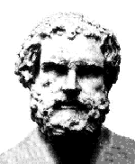

|  |
Démocrite : Penseur Grec ayant vécut vers 460 – 360 avant J.C.. Il fut le premier a avoir eu l’intuition que la matière était faite d’une infinité de petits corpuscules, invisibles, indivisibles et éternels ; et que le monde visible était fait d’un assemblage d’atomes invisibles. |